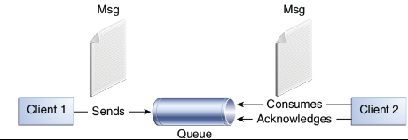
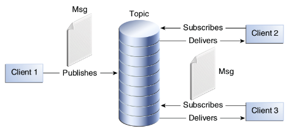

文章目录
JMS 概述
JMS1.1（Java Message Service）是Java 推出的访问已存在的消息产品的一种标准规范，也被称为消息中间件。 JMS 为Java 语言的客户端和Java 语言的中间曾服务使用这些消息系统提供了一种通用的方法。它主要是定义了消息语义，以及一组与之对应的Java 接口。JMS的规范包容了对Java 编程语言之外的其他语言的支持。
JMS 的两种类型
点对点（P2P）
点对点系统与消息队列一起工作的。大多数队列由管理员创建，并被客户端看做是静态资源。

发布/订阅（Pub/Sub）
JMS Pub/Sub 模型定义了客户端如何发布消息到给予内容层次的众所周知的节点和如何从节点订阅消息。

JMS 消息
消息（Message）在JMS 中被用来描述企业应用间的异步通信。包括异步请求、响应或事件，它们是被企业应用消费的。JMS 消息有以下基本分组成：
- 消息头 所有的消息都值相同的头字段集。头字段办函了客户端和提供商都要使用的用于标识和路由消息的值。
- 属性 除了标准的头字段外，消息提供了一个内置的功能来向消息增加可选的头字段。
- 应用专有属性 为消息增加应用专有的头字段提供的机制。
- 标准属性 JMS 定义的一些标准属性，他们相当于可选的头字段。
- 提供上专有属性 提供商专有的属性。
- 消息体 JMS 定义了几个消息体类型。这些类型覆盖了大部分当前使用的消息风格。
消息字段头
- JMSDestination 包含了消息被发往的目的地。创建消息时可以设置JMSDestination，但是消息发送完毕时，会被更新为发送方指定的JMSDetination。
- JMSDeliveryMode 包含了消息发送时指定的转发模式。
- NON_PERSISTENT 最多一次的。消息会因JMS Provider 的停止而丢失。
- PERSISTENT 有且只有一次。JMS Provider 服务停止重启后不会丢失。
- JMSMessageID 包含了一个用于唯一标识由JMS provider发送的每个消息。
- JMSTimestamp 包含了消息被发送的时间。但不是消息被真正转发的时间。
- JMSCorrelation 客户端可以使用JMSCorrelationID 来链接消息，典型的用法就是将响应消息和请求消息连接起来。
- JMSReplyTo 消息被发送时包含一个由客户端支持的目的地。它是回复消息应当被发送的目的地。
- JMSRedelivered 当消费者收到带有 JMSRedelivered 的消息头时，表明该消息在过去传输过但没有被确认。JMS Provider 必须对该字段进行设置，当为 true 时即告知消费者该消息是重传的，消费者需要自行处理重复的消息。
- JMSType 包含了由客户端在发送消息时指定的消息类型标识。
- JMSExpiration 消息的过期时间，其值为当前时间加上存活时间（毫秒）；当存活时间设置为 0 时，该字段的值也被设置为 0 ，表示永不过期。
- JMSPriority 包含了消息的优先级。消息的优先级， 0 代表最低优先级， 9 代表最高优先级；一般 0~4 为普通优先级， 5~9 为加快优先级。
消息属性
Message 除了定义的头字段外，还有一个内置的功能，就是支持为该消息添加可选头字段。例如setObjectProperty() 等方法。
消息体的格式
SteamMessage消息体包含的是Java 的原始流，它连续的填充和读。MapMessage消息体包含一系列的键值对。键值的顺序没有定义。TextMessage消息体包含的是java.lang.String。ObjectMessage消息体包含了可序列化的Java 对象。也可以是对象集合。BytesMessage消息包含一个未解释的字节流。
消息的确认
如果会话是事务性的，那么消息确认自动由commit 处理，切恢复由rollcack 处理。非事物的方式如下：
DUPS_OK_ACKNOWLEDGE该选项称为懒惰的消息传递。该选项只用于可以忍受重复消息的消费者。AUTO_ACKNOWLEDGE当消息被成功地从调用接收返回或MessageListener 成功返回时，会话自动确认刻画段的消息接收。CLIENT_ACKNOWLEDGE客户端通过调用消息的acknowledge 方法来确认消息。确认一个被消费的消息会自动确认被该会话转发的所有消息。
受管对象
JMS 的受管对象是那些包含了JMS 配置信息的对象。这些配置信息通常由管理员配置然后由客户端使用。JMS 的受管对象可以通过JNDI 查找。
- Destination 包含了除地址外的提供商特有的配置信息且它支持并发使用。代表了一个打开的TCP/IP Scoket 连接。
- 它再授权发生的地方创建
- 它能定义一个独一无二的ClientID
- 它能够创建Session
- 它提供连接的元信息，ConnectionMetaData
- 它支持一个可选的ExceptionListener
- ConnectionFactory 封装了一系列的提供商的连接配置参数，Client 使用它来创建与JMS Provider 的连接。同时，其支持并发。
常用对象
- Connection 表示客户端和JMS 系统之间的连接。Connection 可以产生一个或多个Session。
- Session 通过session 创建生产者、消费者和消息等。Session 也提供了事务的功能。
- TemporaryQueue和TemporaryTopic 临时目的地通常用作JMSReplayTo 的目的地。
- QueueBrower 用来查看队列中的消息，但不删除它们。
- QueueRequestor 来简化服务请求，提供一个request 方法来发送请求信息和等待回复。
- MessageListener 异步的模式，消息的监听者。一旦注册，消息到达时，就会通知。
- ExceptionListener 处理连接的异常信息的地方。
参考引用
本文章采用知识共享署名 2.5 中国大陆许可协议进行许可。
欢迎转载，但转载请注明来自张兆玉，并保持转载后文章内容的完整。本人保留所有版权相关权利。
本文链接：https://zhangzhaoyu.github.io/2016/10/19/jms-specification-introduction/